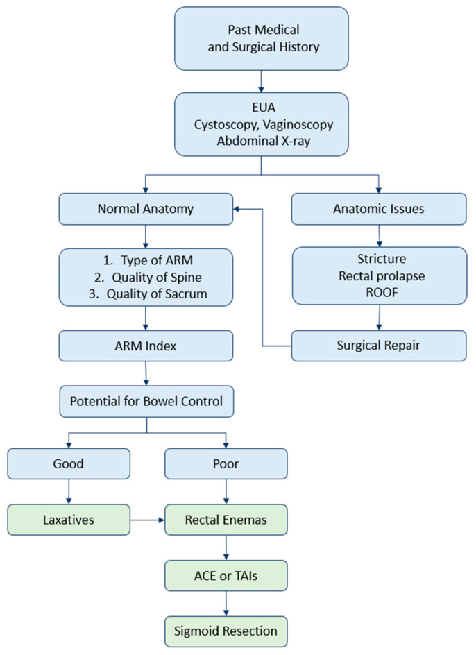
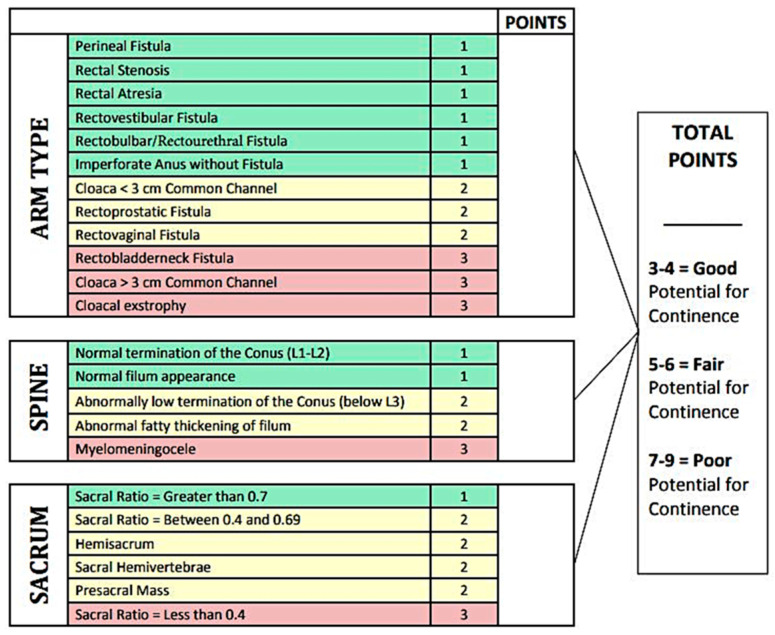
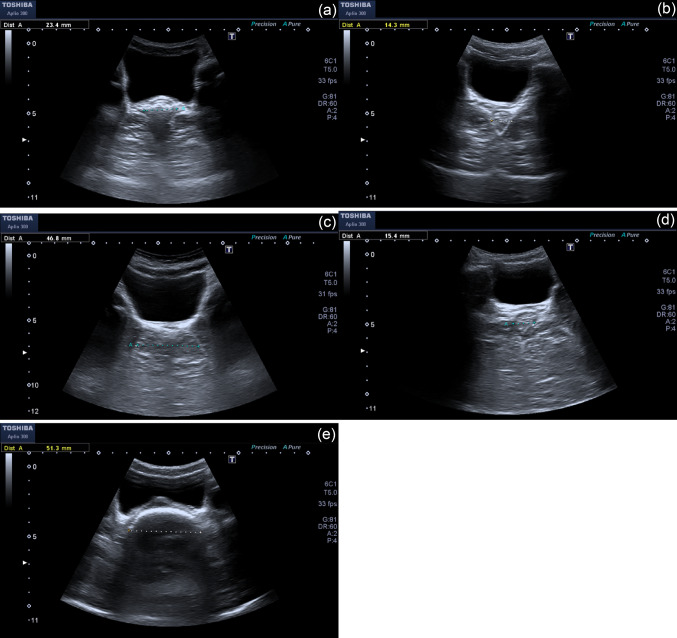
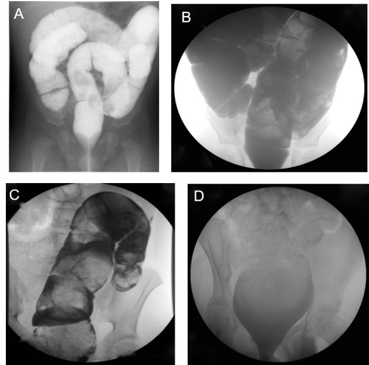

3100 — Quản lý ruột & kiểm soát đại tiện sau mổ ARM: Krickenbeck, bowel management và khi nào tái mổ
Tags: pattern:di-tat-hau-mon pattern:son-phan pattern:tao-bon pattern:bat-thuong-tuy vung:hau-mon-truc-trang vung:dai-trang vung:mong-cung-cut protocol:XR-doi-quang protocol:MRI-chau protocol:US-truc-trang score:Krickenbeck score:ARM-index
Mức chắc chắn (certainty): tổng hợp y văn (literature synthesis) — ghép bài tổng quan bowel management ARM (Children 2023, PMCID PMC10217060), đoàn hệ 43 trẻ ARM sau mổ định hình xếp theo Krickenbeck (Heliyon 2020, PMCID PMC7033552), nghiên cứu POCUS đo đường kính trực tràng 2026 (Pediatr Surg Int, PMCID PMC13379443) và loạt 83 trẻ đối chiếu đối quang với thể tích thụt hiệu quả (Cureus 2016, PMCID PMC5036987). Không có ca do nhóm tự chụp; ca trong quiz lấy từ ảnh công bố, ghi nguồn từng ảnh.
Câu hỏi thực hành: bé gái 5 tuổi, mổ ARM thể rò tiền đình lúc 6 tháng, nay són phân mỗi ngày, mẹ tả "lúc nào cũng ướt quần", nhưng có hôm 3–4 ngày không đi được. Đối quang đại tràng không hẹp, không giãn. Gia đình hỏi: "Có phải mổ lại không? Có thuốc nào cho con tự đi được?" Bài chốt bốn quyết định: (1) són hằng ngày + bí phân nhiều ngày = táo bón ứ tràn, không phải "mất cơ thắt" — điều trị bằng tháo phân + nhuận tràng kích thích, không mổ; (2) đối quang đại tràng bình thường KHÔNG dự đoán được thể tích thụt hiệu quả (R² chỉ 0,21) — phải chuẩn độ theo cân nặng và đáp ứng lâm sàng; (3) thuốc làm mềm phân bị CẤM ở ARM vì làm phân lỏng khó nhận biết, tăng són; (4) chỉ mổ lại khi có bất thường giải phẫu thật (hẹp miệng nối, sa trực tràng, ROOF) hoặc thất bại với thụt/ACE. Nối 3075 – Dị tật hậu môn–trực tràng ở sơ sinh, 1779 – Hẹp miệng nối sau kéo trực tràng, 3001 – Hẹp lỗ thông Mitrofanoff.
1. Tổng quan bệnh học – cơ chế hình ảnh: vì sao "mổ thành công" vẫn són
1.1 Bốn trụ cột của tự chủ đại tiện và chỗ ARM bị hỏng
- Bốn trụ cột: (1) cảm giác hậu môn — phân biệt đặc/lỏng/hơi; (2) chức năng cơ thắt — siết và giãn đúng lúc; (3) nhu động trực tràng–sigma — không quá nhanh, không quá chậm; (4) chức năng chứa (proprioception) — nhận biết căng giãn của trực tràng (PMC10217060).
- ARM hỏng cả bốn: phức hợp cơ thắt phát triển bất thường, cảm giác hậu môn giảm, và dị tật tủy–xương cùng đi kèm làm mất cảm giác và phản xạ. Vì thế kết quả chức năng không thể suy ra từ "miệng nối trông đẹp" trên phim.
- TẠI SAO phân lỏng lại tệ hơn phân đặc: khi cảm giác hậu môn kém, trẻ chỉ nhận ra khối phân đặc, lớn, gây căng trực tràng; phân lỏng chảy qua cơ thắt mà không tạo tín hiệu căng → són âm thầm. Đây là lý do không dùng thuốc làm mềm phân ở ARM; thay vào đó là nhuận tràng kích thích + chất xơ tạo khối để có phân thành khuôn (PMC10217060).
- TẠI SAO táo bón lại gây són: phân ứ lâu trong trực tràng–sigma giãn thành megarectosigmoid; phân lỏng đi vòng qua khối phân cứng (overflow soiling) và rỉ ra ngoài. Trẻ bị gọi nhầm là "tiêu chảy" rồi cho thuốc cầm — càng bít, càng són.
- Vì sao cần hình ảnh chứ không chỉ khám: đối quang đại tràng trả lời có hẹp/megarectosigmoid/ROOF không; MRI chậu–tủy trả lời tủy căng, xương cùng, khối trước cùng; X-quang bụng và POCUS trả lời mức ứ phân. Ba câu hỏi khác nhau, không thay thế nhau.
1.2 Dịch tễ và gánh nặng — con số phải nhớ
| Chỉ số | Số liệu | Nguồn |
|---|---|---|
| Tần suất ARM | 1/4.000–5.000 trẻ sinh sống, nam hơi nhiều hơn nữ | PMC10217060 |
| Dị tật kèm | > 75% có ít nhất một dị tật kèm (VACTERL, tim, thận, tủy–cột sống) | PMC10217060 |
| Táo bón sau PSARP | tới 79% | PMC10217060 |
| Són phân sau PSARP | tới 48% | PMC10217060 |
| Ngày điều trị trong 5 năm đầu | trung bình 32 ngày nội trú + 126 ngày ngoại trú | PMC10217060 |
| Kết quả chức năng một trung tâm (n = 43, Krickenbeck) | vận động ruột tự chủ 53,5% · són 11,6% · táo bón 9,3% | PMC7033552 |
| Mục tiêu "sạch" | 1–3 lần đi phân/ngày và ≤ 1 lần "tai nạn"/tuần (Rome IV) | PMC10217060 |
| Tỉ lệ sạch sau chương trình bowel management | 70% lúc 1 năm (222 trẻ); trong đó 74% sạch nhờ thụt, 62% nhờ nhuận tràng | PMC10217060 (dẫn Wood) |
| Thụt hằng ngày | 80% sạch; 97% sạch nếu chỉ cần nhuận tràng; còn 71% duy trì sạch lúc 2 năm | PMC10217060 (dẫn Kilpatrick) |
| ACE (Malone) | 78% "thành công" (sạch hoặc chỉ rỉ nhẹ đêm sau thụt); 13% cải thiện nhưng chưa sạch | PMC10217060 (dẫn Peeraully) |
| Thể tích thụt hiệu quả | trung vị 22 mL/kg (khoảng 5–48 mL/kg); không ca nào cần > 48 mL/kg | PMC5036987 |
| Đối quang dự đoán thể tích thụt | R² = 0,21; thêm chẩn đoán + giãn đại tràng + ứ cản quang chỉ lên R² = 0,35 | PMC5036987 |
| POCUS đường kính trực tràng (TRD) | cắt 3,1 cm: Se 63,3% / Sp 96,3%; có triệu chứng 3,64 cm vs không triệu chứng 2,20 cm vs chứng lành 2,05 cm | PMC13379443 |
2. Mẫu hình + chẩn đoán phân biệt theo cơ chế (Gamut)
- Nhóm A — Bất thường giải phẫu (phải thấy trên hình ảnh, có thể mổ):
- Hẹp miệng nối (anastomotic stricture): chỗ hẹp tại neoanus/miệng nối, đại tràng trên giãn; triệu chứng bí phân, rặn, són ứ tràn; soi/thăm khám dưới gây mê + đối quang là chốt.
- Sa trực tràng (rectal prolapse): niêm mạc lòi ra khi rặn; đối quang thấy nếp gấp, nhưng chẩn đoán chủ yếu lâm sàng.
- ROOF (remnant of original fistula): đoạn rò cũ còn lại sau mổ — túi mù nằm giữa trực tràng và niệu đạo/âm đạo; gây són liên tục, nhiễm trùng tái diễn; cần soi bàng quang/âm đạo + MRI.
- Megarectosigmoid: trực tràng–sigma giãn mất trương lực, chứa phân; đối quang thấy giãn, không hẹp.
- Đoạn vô hạch còn lại/túi Duhamel: bệnh Hirschsprung bị bỏ sót hoặc miệng nối kiểu Duhamel để lại túi; đối quang có vùng chuyển tiếp và túi giãn.
- Nhóm B — Rối loạn chức năng (điều trị bằng bowel management, không mổ):
- Táo bón ứ tràn: khối phân lớn + són lỏng; X-quang bụng/POCUS thấy ứ phân; đối quang không hẹp.
- Nhu động nhanh, chứa kém: đi nhiều lần, phân lỏng, són ngay sau ăn; không có tổn thương giải phẫu.
- Són do cơ thắt yếu: són khi ho/gắng, không táo bón; thường gặp thể ARM cao, xương cùng kém.
- Nhóm C — Bất thường thần kinh (quyết định tiên lượng, không sửa được bằng thuốc):
- Tủy căng (tethered cord): chóp tủy dưới L2–L3, dây tận cùng dày/mỡ; gây són tiến triển, yếu chi dưới, bàn chân biến dạng.
- Thiểu sản/xương cùng ngắn: tỉ lệ xương cùng (sacral ratio) thấp; càng thấp càng kém tự chủ.
- Myelomeningocele/nứt tủy: mất chức năng thần kinh–cơ vòng và cảm giác.
3. Bảng so sánh phân biệt (ma trận đối chiếu)
| Thực thể (entity) | Hình ảnh điển hình | Chốt vào (rule-in) | Chốt loại (rule-out) | Gợi ý xác nhận |
|---|---|---|---|---|
| Hẹp miệng nối | Đối quang: chỗ hẹp tại neoanus, đại tràng trên giãn; không thấy cản quang qua dễ dàng | Không đưa được ống Hegar theo tuổi + hẹp trên đối quang + bí phân | Đối quang rộng đều, ống thông qua dễ → không phải nguyên nhân | Thăm khám dưới gây mê + đối quang; nong hoặc mổ lại (bài 1779) |
| ROOF (đoạn rò cũ) | Túi mù giữa trực tràng và niệu đạo/âm đạo; có thể thấy trên MRI/soi | Són liên tục + nhiễm trùng niệu–sinh dục tái diễn + túi mù | Không có túi mù, đối quang trơn → loại | Soi bàng quang/âm đạo + MRI chậu |
| Sa trực tràng | Đối quang: nếp niêm mạc lồng; lâm sàng thấy khối lòi khi rặn | Khối đỏ lòi ra khi rặn, tự co lại | Không lòi khi rặn → loại | Khám tư thế rặn; đối quang thì rặn |
| Táo bón ứ tràn/megarectosigmoid | X-quang: khối phân lớn; đối quang: trực tràng–sigma giãn, không hẹp | Bí phân nhiều ngày + són lỏng + ứ phân trên phim | Đối quang hẹp + ống Hegar không qua → hẹp | Tháo phân thử; đáp ứng nhuận tràng |
| Tủy căng | MRI: chóp tủy dưới L2–L3, dây tận cùng dày > 2 mm hoặc mỡ; siêu âm < 6 tháng | Són tiến triển + bất thường da vùng cùng cụt + yếu chi dưới | Chóp tủy L1–L2, dây mảnh, không mỡ → loại | Siêu âm tủy < 6 tháng; MRI > 6 tháng |
| Thiểu sản xương cùng | X-quang: sacral ratio < 0,4; xương cùng ngắn, mất đốt | SR thấp + ARM thể cao + són từ nhỏ | SR > 0,7 → tiên lượng tốt hơn | Đo SR trên phim chậu thẳng (bài 3075) |
| Đoạn vô hạch/túi Duhamel | Đối quang: vùng chuyển tiếp + túi giãn sau miệng nối | Bí phân nặng, không đáp ứng nhuận tràng + vùng chuyển tiếp | Đối quang không chuyển tiếp → loại | Sinh thiết trực tràng; đối quang cản quang |
| Són do cơ thắt yếu | Không tổn thương giải phẫu; đối quang bình thường | Són khi gắng sức, không táo bón, ARM thể cao | Có ứ phân/hẹp → không phải thể đơn thuần | Đo áp lực hậu môn; ARM index |

Sơ đồ 6 bước: tiền sử → thăm khám dưới gây mê + soi bàng quang/âm đạo + X-quang bụng → nếu có bất thường giải phẫu thì sửa; nếu không, tính ARM index từ thể ARM + tủy + xương cùng → tiềm năng tự chủ tốt → nhuận tràng; kém → thụt tháo → ACE/TAI → cắt sigma chọn lọc. Nguồn: Children 2023 (PMC10217060), Fig. 3, CC BY 4.0.4. Protocol chụp + hệ phân độ/điểm chuẩn hóa
4.1 Bộ ba hình ảnh tối thiểu
- X-quang bụng tư thế nằm: đánh giá khối phân và mức ứ khí; không đo được chức năng, chỉ là "bản đồ ứ phân" trước khi chuẩn độ.
- Đối quang đại tràng (contrast enema): bơm cản quang qua neoanus hoặc hậu môn nhân tạo; trả lời hẹp, giãn, ROOF, vùng chuyển tiếp, chiều dài đại tràng. Không dùng để chọn thể tích thụt (xem mục 5).
- MRI chậu–tủy: chỉ định khi nghi tủy căng, khối trước cùng, ROOF, hoặc ARM thể cao/phức tạp; trẻ < 6 tháng dùng siêu âm tủy thay MRI (PMC10217060).
- POCUS đo TRD (transrectal diameter): đầu dò đặt trên bụng dưới, lát cắt ngang qua trực tràng, đo đường kính trước–sau lớn nhất; cắt 3,1 cm gợi ý ứ phân có triệu chứng (Se 63,3%, Sp 96,3%) — không thay đánh giá toàn bộ đại tràng, nhưng không bức xạ và lặp lại được (PMC13379443).
4.2 Krickenbeck — ngôn ngữ chung để ghi kết quả
- Vận động ruột tự chủ (voluntary bowel movement, VBM): trẻ cảm nhận được mót, nói được và nín được.
- Són phân (soiling): độ 1 — thỉnh thoảng, ≤ 1–2 lần/tuần; độ 2 — hằng ngày nhưng không ảnh hưởng xã hội; độ 3 — són liên tục, có vấn đề xã hội.
- Táo bón (constipation): độ 1 — kiểm soát bằng chế độ ăn; độ 2 — cần nhuận tràng; độ 3 — kháng nhuận tràng + chế độ ăn.
- Cách dùng: ghi cả ba trục ở mỗi lần khám, không chỉ "sạch/không sạch"; so sánh theo thời gian để biết chương trình có hiệu quả.
4.3 ARM index — tiên lượng trước khi hứa với gia đình
| Yếu tố | 1 điểm | 2 điểm | 3 điểm |
|---|---|---|---|
| Thể ARM | rò tầng sinh môn, hẹp trực tràng, teo trực tràng, rò tiền đình, rò niệu đạo hành/niệu đạo, không rò | cloaca < 3 cm, rò niệu đạo tiền liệt tuyến, rò âm đạo | rò cổ bàng quang, cloaca > 3 cm, lộ bàng quang–cloaca |
| Tủy | chóp tủy L1–L2, hình dạng bình thường | chóp tủy dưới L3, dây tận cùng dày mỡ | myelomeningocele |
| Xương cùng | SR > 0,7 | SR 0,4–0,69, bán xương cùng, nửa đốt sống cùng, khối trước cùng | SR < 0,4 |
- Tổng điểm: 3–4 = tiềm năng tốt; 5–6 = trung bình; 7–9 = kém (PMC10217060, Fig. 2).
- Cách nói với gia đình: "Điểm này không phải số phận, mà là dự báo để chọn mức hỗ trợ; điểm kém vẫn có thể sạch nhờ thụt/ACE, nhưng khả năng tự đi hoàn toàn thấp hơn."

Bảng điểm ARM continence index: mỗi trục 1–3 điểm; tổng 3–4 tốt, 5–6 trung bình, 7–9 kém. Nguồn: Children 2023 (PMC10217060), Fig. 2, CC BY 4.0.4.4 Thứ tự điều trị (bowel management)
flowchart TD
A["Són hoặc táo bón sau PSARP"] --> B["Thăm khám dưới gây mê + X-quang bụng + đối quang"]
B --> C{"Bất thường giải phẫu?"}
C -->|"Có"| D["Hẹp miệng nối / sa trực tràng / ROOF / túi Duhamel"]
D --> E["Sửa giải phẫu"]
C -->|"Không"| F["Tính ARM index"]
F --> G{"Tiềm năng tự chủ"}
G -->|"Tốt 3-4"| H["Tháo phân + nhuận tràng kích thích + chất xơ"]
G -->|"Trung bình 5-6"| I["Thụt tháo hằng ngày"]
G -->|"Kém 7-9"| J["Thụt tháo hoặc TAI"]
I --> K["ACE nếu thất bại"]
J --> K
K --> L["Cắt sigma chọn lọc"]
- Bước 1 — tháo phân (disimpaction): làm sạch khối phân trước khi chuẩn độ; nếu bỏ bước này, mọi thuốc đều thất bại.
- Bước 2 — nhuận tràng kích thích: senna ± chất xơ tạo khối; không dùng thuốc làm mềm phân. Chuẩn độ theo phân thành khuôn và số lần đi; không vượt 60 mg/ngày vì nguy cơ phỏng da vùng đáy quần (với chuẩn độ từng bước, tỉ lệ này chỉ 2,2%) (PMC10217060).
- Bước 3 — thụt tháo: dung dịch muối sinh lý, bắt đầu 400 mL, cùng giờ mỗi ngày; thể tích hiệu quả trung vị 22 mL/kg (5–48 mL/kg) — chuẩn độ theo cân nặng và đáp ứng, không theo đối quang. Nước máy chỉ dùng cho trẻ ≥ 3 tuổi; trẻ nhỏ có nguy cơ hạ natri máu (PMC10217060; PMC5036987).
- Bước 4 — TAI/ACE: transanal irrigation hoặc antegrade continence enema (Malone appendicostomy) khi thụt ngược không hiệu quả/không dung nạp; ACE thành công 78%, thêm 13% cải thiện (PMC10217060).
- Bước 5 — cắt sigma chọn lọc: chỉ khi megarectosigmoid thất bại với mọi biện pháp; cắt sigma có thể làm són nặng hơn vì mất chức năng chứa, nên không phải lựa chọn đầu tay.
- Theo dõi: đánh giá lại ở 6 tháng, 1 năm, 2 năm; mục tiêu 1–3 lần/ngày, ≤ 1 tai nạn/tuần; chuyển sang người lớn với hồ sơ ghi rõ thể ARM, chiều dài đại tràng, kiểu miệng nối, ACE.
5. Biến thể bình thường và cạm bẫy
- Đối quang "bình thường" không loại trừ rối loạn chức năng: thể tích cản quang làm đầy đại tràng chỉ dự đoán R² = 0,21 thể tích thụt hiệu quả; thêm giãn đại tràng/ứ cản quang lên 0,35 — tức 65% phương sai còn lại không giải thích được. Đừng hứa "phim bình thường thì sẽ tự đi".
- Thuốc làm mềm phân làm són nặng hơn: phân lỏng khó nhận biết khi cảm giác hậu môn kém; dùng nhuận tràng kích thích + chất xơ thay thế.
- Són ứ tràn bị chẩn đoán nhầm là tiêu chảy: hỏi số ngày không đi, sờ khối phân, chụp X-quang bụng trước khi cho thuốc cầm.
- Bỏ sót tủy căng: X-quang bụng bình thường không loại trừ; trẻ < 6 tháng phải siêu âm tủy, lớn hơn MRI khi có bất thường da, yếu chi, són tiến triển.
- Nước máy ở trẻ nhỏ: nguy cơ hạ natri máu; dùng nước muối sinh lý cho trẻ < 3 tuổi.
- Senna liều cao: 60 mg/ngày liên quan phỏng da vùng đáy quần; chuẩn độ từng bước, ngừng khi phân lỏng.
- "Hẹp" trên phim không đồng nghĩa cần mổ: nhiều hẹp đáp ứng nong/calibration; chỉ mổ khi hẹp tái phát kèm bí phân hoặc có đoạn vô hạch/túi Duhamel (bài 1779).
- ROOF bị bỏ qua: són liên tục sau mổ "đẹp" + nhiễm trùng niệu–sinh dục tái diễn → soi bàng quang/âm đạo + MRI, đừng chỉ tăng liều nhuận tràng.
6. Tự lượng giá — Blind Quiz
Ca 1 — Bé trai 5 tuổi, mổ ARM thể rò niệu đạo hành. Són phân mỗi ngày, 3–4 ngày mới đi một lần. Đối quang không hẹp.

- Gợi ý: không sốt, bụng mềm, sờ thấy khối phân dọc khung chậu trái.
- Câu hỏi: Đây là són do cơ thắt hay són ứ tràn? Cần làm gì trước khi kê thuốc?
Bấm để hiện đáp án (findings + chẩn đoán)
- Dấu hiệu: TRD 45,9 mm (panel c), lớn hơn ngưỡng 3,1 cm; đối quang không hẹp → ứ phân + táo bón ứ tràn, không phải hẹp.
- Chẩn đoán: són ứ tràn sau ARM — điều trị tháo phân trước, sau đó senna + chất xơ, không dùng thuốc làm mềm phân.
- Vì sao: phân lỏng đi vòng qua khối phân cứng và rỉ ra; làm mềm phân chỉ làm són nặng hơn. Mục tiêu 1–3 lần/ngày, ≤ 1 tai nạn/tuần.
- Nguồn ảnh: Pediatr Surg Int 2026 (PMC13379443), Fig. 3, CC BY 4.0.
Ca 2 — Bé gái 7 tuổi, ARM thể cloaca > 3 cm, chóp tủy L4, xương cùng SR 0,35. Gia đình hỏi "sau này con có tự đi được không".
- Câu hỏi: Tính điểm ARM index và trả lời gia đình thế nào?
Bấm để hiện đáp án (findings + chẩn đoán)
- Điểm: thể cloaca > 3 cm = 3; chóp tủy dưới L3 = 2; SR < 0,4 = 3 → tổng 8 = tiềm năng kém.
- Tư vấn: khả năng tự đi hoàn toàn thấp, nhưng thụt tháo/ACE vẫn đạt sạch ở phần lớn trẻ; đặt mục tiêu sạch với hỗ trợ, không hứa "tự đi như trẻ bình thường".
- Vì sao: điểm cao phản ánh cơ thắt + cảm giác + tủy–xương cùng cùng kém, không chỉ một yếu tố.
- Nguồn ảnh: Children 2023 (PMC10217060), Fig. 2, CC BY 4.0.
Ca 3 — Bé trai 9 tuổi, 2 năm sau PSARP, bí phân tăng dần, đối quang thấy trực tràng–sigma giãn nhưng không có chỗ hẹp.

- Câu hỏi: Trong 4 kiểu đối quang, kiểu nào phù hợp? Có cần mổ lại không?
Bấm để hiện đáp án (findings + chẩn đoán)
- Dấu hiệu: kiểu C — giãn trực tràng–sigma, không có chỗ hẹp khu trú; kiểu A là đại tràng bình thường, B giãn toàn bộ, D chỉ giãn trực tràng.
- Chẩn đoán: megarectosigmoid do táo bón ứ tràn — không mổ lại; điều trị tháo phân + senna + chất xơ, theo dõi 6–12 tháng. Chỉ cân nhắc cắt sigma khi thất bại với thụt/ACE và giãn tiến triển.
- Vì sao: không có hẹp cơ học thì nhuận tràng đúng liều giải quyết được phần lớn; mổ sớm làm mất chức năng chứa và tăng són.
- Nguồn ảnh: Cureus 2016 (PMC5036987), Fig. 1, CC BY 4.0.
Bài liên quan chéo
- 600 – Tổng quan Nhi khoa
- 3075 – Dị tật hậu môn–trực tràng ở sơ sinh (phân loại, PPD, sacral ratio, thì đầu)
- 1779 – Hẹp miệng nối sau kéo trực tràng (hẹp lành tính vs đoạn vô hạch)
- 3001 – Hẹp lỗ thông Mitrofanoff (bài học về lỗ thông ruột–da)
- 622 – Tắc ruột sơ sinh (microcolon, Hirschsprung)
- 656 – Bất thường tủy–cột sống kín ở trẻ (tủy căng, dây tận cùng)
Không dùng để chẩn đoán độc lập khi chưa có người hướng dẫn.